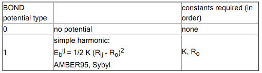
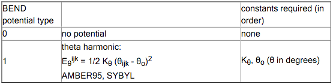
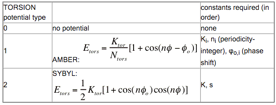
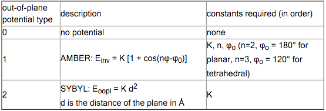
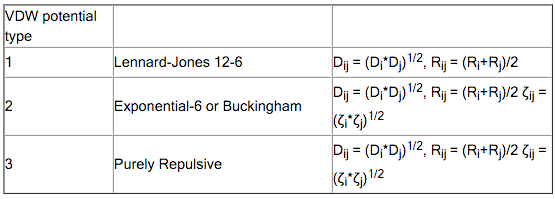

Parameter files¶
The parameters of a forcefield are defined via one or more files, automatically set when using a standard type . One way to change it is to use a parametrization made by someone else, that works better for systems of your interest.
A far more advanced use is to tweak an existing file, or create a new one, possibly to improve the results for specific systems of interest. For such a project the PARAMS tool might be helpful.
Here we distinguish the UFF and the AMBER case.
UFF parameters¶
The parameter set used by UFF can be changed via the UFF key block. Aside from the standard UFF forcefield, we ship two parameter sets for Metal-Organic Frameworks:
UFF4MOF parameters
We ship the extended parameter set for Metal-Organic Frameworks created by M.A. Addicoat et al. (2013). Select the UFF4MOF_general_db, UFF4MOF_elements_db and UFF4MOF_mmatomtypes_db files to use these parameters, and check that the proper atom types are detected for your system or set them manually. Please see [7] for details on the parameters.
UFF4MOFII parameters
We ship a second extended parameter set for Metal-Organic Frameworks created by D.E. Coupry et al. (2016). Select the UFF4MOFII_general_db, UFF4MOFII_elements_db and UFF4MOFII_mmatomtypes_db files to use these parameters, and check that the proper atom types are detected for your system or set them manually. Please see [8] for details on the parameters.
User-modified force fields (expert option)¶
Finding good UFF parameters can be a challenging task, and any results with modified parameters should be checked very carefully. SCM has no experience with this, and the parameters supplied for UFF have not been generated by us. Feel free to test new parameters, and feel free to let us know if you have a good working set for a specialized situation.
General parameters file
The general_db file ($AMSHOME/atomicdata/UFF/general_db) contains all the parameters used to calculate the forces and energies. The format is:
MMAtomType, ri, phi, xi, di, psi, zmm, vsp3, vsp2, chi, nc.
The items in the list are:
- MMAtomType: name, max 5 characters
- ri: Valence Bond [Å]
- phi: Valence Angle [Degree]
- xi: Nonbond Distance [Å]
- di: Nonbond Energy [kcal/mol]
- psi: Nonbond scale [Number]
- zmm: Effective Charge [Charge]
- vsp3: sp3 Torsional Barrier [kcal/mol]
- vsp2: sp2 Torsional Barrier [kcal/mol]
- chi: Electronegativity
- nc: Number of directly attached atoms, aka coordination number. This is required for counting the number of possible dihedrals, and is defined only for the sp2 and sp3 centers (types 2, R, and 3)
The current set of parameters comes from the deMonNano program, and is a combination of published parameters and fitted data to fill in the gaps. The deMonNano documentation says the following about the parameters:
Implementation of the Universal Force Field (UFF) in deMonNano
--------------------------------------------------------------
As far as possible, UFF molecular mechanics forcefield in deMon
follows the published forcefield definition in [1]. In several
cases, the definitions and expressions in [1] are not consistent
with the published applications of the forcefield [1,5,6].
In those cases, an attempt was made to correct the errors and omissions,
using information from [2].
The following changed were made, compared to the published UFF
forcefield description (all equation and page numbers refer to [1]).
1. Sign error in Eq. 2 (equilibrium bond length) was corrected
- electronegativity correction must be negative!
2. Equilibrium valence angle for O_3_z was corrected from 146.0
degree to 145.45 degree.
3. Bending periodicity (Eq. 10) for linear coordination was
corrected from 1 to 2.
4. Sign errors were corrected in eqs. 13 and and unnumbered equation
for the beta parameter (between eqs. 13 and 14).
5. The reference value of the UFF amide force constant, of 105.5
kcal/mol/rad**2 (p. 10028) is wrong. The results are consistent
with the force constant of 211.0 kcal/mol/rad**2.
6. Equilibrium torsional angle for a bond between a group-6A atom
(oxygen ...) and an sp2 atom (90 degree) is wrong (p. 10028).
It should be 0 degree.
7. The conditional for the special-case sp2-sp3 torsion (p. 10029)
is wrong, and should be inverted - see [4].
8. The overall shape of the UFF torsional potential degenerates to
a Heavyside function when one of the bond angles becomes linear,
leading to failures in geometry optimization and force constant
evaluation. The UFF torsional term was augmented with a smooth
masking function, to avoid this.
9. UFF inversion potential is not defined in [1] for group 5A
elements (from phosphorus down). Taking the equilibrium inversion
coordinate of 87 degree, and the suitable expressions for the
cosine weights (see uff_get_inversion_shape in "uff_database.f90")
appears to reproduce published UFF structures and energetics.
The following atom types have been fully tested, and are believed
to reproduce published UFF forcefield results exactly. The examples
refer to the $deMon/examples/test.mm directory.
Atom type Example Description
--------- ------- -----------
Al3 alme3tma Trivalent aluminum
As3+3 asf3 Trivalent arsenic
B_2 bcl3 Planar (sp2) boron
B_3 b2h5nme2 Tetrahedral (sp2) boron, including
charge transfer adducts and borohydrates
Br bbr3 Univalent bromine
C_1 c2h2, co Linear (sp) carbon
C_2 acetone Planar tricoordinated (sp2) carbon
C_3 c2h6 Tetrahedral (sp3) carbon
C_R c4h6 Resonant, variable bond order (sp2) carbon.
Cl socl2 Univalent chlorine
F_ sof2ncl Univalent fluorine
Ge3 geh3ogeh3 Tetrahedral (sp3) germanium
H_ h2o Normal, non-bridging hydrogen
H_b b2h5nme2 Bridging hydrogen, for use in boranes
(NOT SUITABLE FOR H-BONDS!)
I_ bi3 Univalent iodine
N_1 ch3cn Monocoordinated (sp) nitrogen, triple bond
N_2 ch3n2ch3 Dicoordinated (sp2) nitrogen, single-double bond
N_3 ch3nh2 Amine (sp3) nitrogen, three single bonds
N_3+4 b2h5nme2 Charged amine (sp3) nitrogen, four single bonds
(THIS IS NOT A STANDARD UFF TYPE!)
N_R c5h5n Resonant planar (sp2) nitrogen, for use in
aromatics and amides. For amides, use 1.41 bond
order!
O_1 co Special "co" type, one triple bond.
O_2 acetone One-coordinated (sp2) oxygen, one double bond.
O_3 h2o Two-coordinated (sp3) oxygen, two single bonds
O_3_z sih3osih3 Special two-coordinated oxygen, for use in
Si-O bonds
O_R c4h4o Resonant planar (sp2) oxygen, also for use in
nitro groups and such.
P_3+3 ph3 Pyramidal (sp3) phosphorus, three single bonds
P_3+5 p4o7 Tetrahedral hypervalent phosphorus
P_3+q bh3ph3 Dative tetrahedral (sp3) phosphorus, watch for
the bond order!
S_3+2 ch3sch3 Bent two-coordinated sulfur (sp3), two single bonds
S_3+4 socl2 Pyramidal three-coordinated hypervalent sulfur
S_3+6 so2cl2 Tetrahedral four-coordinated hypervalent sulfur
Se3+2 h2se Bent two-coordinated (sp3) selenium
Si3 si4o4h8 Tetrahedral silicon
Additionally, parameter sets for the following atom types are believed
be complete, and may be expected produce results identical to the published
UFF data: Li, Na, K_, Rb, Cs (Note that UFF does not specify atomic charges
- it is your responsibility to assign those, if charges are needed!)
For the remaining atom types, UFF definition [1] relies on an unpublished
set of electronegativities [2]. In deMon, these values were replaced by
Pauling electronegativities, scaled to fit published UFF electronegativities.
This can be expected to produce small deviations in bond lengths and bond
angles, compared to published UFF results.
If you wish to use other parameters, you should copy the general_db file, and rename it. This new file can also be placed outside of $AMSHOME/atomicdata/UFF.
Elements file
The elements_db file holds all the elements known to UFF. Keep in mind that these are not the MMAtomTypes, but pure chemical elements. The table contains for every element: atomic number, symbol, minimal valence number, maximum valence number, minimal bond order, maximal bond order. The data in the elements_db is mainly used for cleaning up the Pauling bond orders guessed by UFF, and will probably not need to be modified.
MM Atom Types file
The mmatomtypes_db file contains the matching rules for assigning MM atom types to chemical elements, based on their valence number, and the number of neighbor (bonded) atoms. The current implementation of UFF is limited to 6 MM atom types per element. The table contains for every MM atom type: Number of the element it belongs to, the i-th type of this element, the valence number corresponding to this MM atom type, number of neighbors this MM atom type has, the name of this MM atom type. The naming convention follows the original UFF paper [1]:
A five-character mnemonic label is used to describe the atom types. The first two characters correspond to the chemical symbol; an underscore appears in the second column if the symbol has one letter (e.g., N_ is nitrogen, Rh is rhodium). The third column describes the hybridization or geometry: 1 = linear, 2 = trigonal, R = resonant, 3 = tetrahedral, 4 = square planar, 5 = trigonal bipyramidal, 6 = octahedral. Thus N_3 is tetrahedral nitrogen, while Rh6 is octahedral rhodium. The forth and fifth columns are used as indicators of alternate parameters such as formal oxidation state: Rh6+3 indicates an octahedral rhodium formally in the +3 oxidation state, e.g., Rh(NH3)_6^3+. H_b indicates a bridging hydrogen as in B2Hs O_3_z is an oxygen suited for framework oxygens of a zeolite lattice. P_3_q is a tetrahedral four-coordinate phosphorus used to describe organo-metallic coordinated phosphines.
You can copy the mmatomtypes_db and change it if you need to modify the atom typing behavior of UFF.
AMBER parameters¶
If you want to use a non-standard forcefield you can specify the ForceFieldFile.
Currently two formats are supported for non-uff forcefields. The first is the ADF/SCM related “.ff” format. The other is the much more widely used AMBER “.dat” format.
AMBER forcefield file¶
The format of the AMBER “.dat” files is described here http://ambermd.org/FileFormats.php#parm.dat. Currently the following features are not supported
- Parameter modification files
- The torsions have extra info about 1-4 scaling for nonbonded terms, ignored
- AMBER term 8: INPUT FOR H-BOND 10-12 POTENTIAL PARAMETERS
- AMBER term 9: INPUT FOR EQUIVALENCING ATOM SYMBOLS FOR THE NON-BONDED 6-12 POTENTIAL PARAMETERS
SCM forcefield file¶
An example of this is $AFDHOME/atomicdata/ForceField/amber95.ff.
It has a flexible format and is fully self documented.
It is not used outside of the ADF/SCM context.
The file must contain the force field parameters and the MM potential for each kind of MM interaction. Although predefined force field files (AMBER and SYBYL) are provided, these force field files can be customized. For example, one may want to change a particular force constant, or one may need to introduce a new atom type, for instance a transition metal. This section provides a detailed description of the force field file.
Format
The force field file is keyword driven with each key block defining parameters for each molecular mechanics interaction type such as bond types, angle types, torsion types, …etc. The key block begins with the keyword, such as “BONDS”.
The lines that actually contain the parameters are sandwiched between two lines that contain “========”. The lines between the keyword and the first line containing “========” are not read by the program. These lines are intended for the user to define the columns as shown below. There can be as many lines between the keyword and the first ‘=====’ as needed.
Example:
BONDS
Atoms pot K ro Notes
i - j type (kcal/molA^2) (Ang)
================================
...
CA CA 1 938.0 1.400 amber95
CT CT 1 620.0 1.526 amber95
...
===============================
Force Field Atom types
The force field atom types are the labels given to each atom in the real system, which determine all interaction parameters involving that atom.
There are some limitations to the force field label types that the user can specify:
- Labels can be a maximum of four characters long, with no spaces.
- The atom types are case sensitive.
- They can contain letters, numbers and other characters except ‘,’ ‘.’ or ‘=’ and tabs.
Example of atom types that are not compatible with the program: C.3, C 3, C=3, C_sp3, *
Examples of atom types that are correct: C_3, C3, Csp3, and C*
Wild Cards
Wild cards can be specified with the asterisk, ‘*’. Wild cards can be specified for angles, torsions and out-of-plane bends. Please refer to the specific sections for the limitations.
CAUTION: When using wild cards, place the wild cards at the beginning of the data section, beginning with the parameters with the most wild cards and ending with those that posses the least wild cards.
Example:
| C_3 | 100.310 | 111.000 | two wild cards | ||
| C_3 | C_3 | 100.310 | 111.000 | one wild card | |
| C_2 | C_3 | C_3 | 100.310 | 111.000 | no wild cards |
If this ordering is not followed, then the wild card parameters will over-ride the specific parameters.
Miscellaneous Notes
- Do not remove the ‘======’ separator lines.
- Units are in kcal/mol, Angstroms, degrees, amu unless otherwise specified
- Sections can be in any order; i.e. BENDS can come before BONDS.
- All keywords are case sensitive and most are in ALL-CAPS
- Input is all free format
- Blank lines will be ignored
- Comment lines can be added to parameter data sections by beginning the line with the ‘#’ symbol.
Example:
H H 1.0080
HC H 1.0080
# example of comment line denoted with # mark.
H1 H 1.0080
H2 H 1.0080
A (partial) Example File
Here we provide an example force field file to illustrate the format of the file. Only a limited number of parameters are included. A detailed description of each section of the force field file is provided in the next section.
FORCE_FIELD_SETTINGS
================================
ELSTAT_1-4_SCALE 1.0000
VDW_1-4_SCALE 1.0000
VDW_DEFAULT_POTENTIAL 1 (1:6-12 2:exp-6 3:exp purely repulsive)
DIELECTRIC_CONSTANT 1.000
================================
MASSES & ATOM LABELS
-----------------------------------
force_field atomic
atom_type symbol mass NOTES
==========================
C_3 C 12.0110 sp3 hybridized carbon
C_2 C 12.0110 sp2 hybridized carbon
C_1 C 12.0110 sp1 hybridized carbon
C_ar C 12.0110 aromatic
N_3 N 14.0070
N_2 N 14.0070
O_3 O 15.9990
==========================
BONDS Ebond = 0.5*K(r-ro)**2
--------------------------------------
Atoms pot
i - j type K R NOTES
==========================
C_2 C_2 1 1340.00 1.335 WHITE_77
C_2 C_3 1 639.00 1.501 WHITE_75
C_3 C_3 1 633.60 1.540 *
C_3 N_2 1 760.20 1.440 *
==========================
BENDS Ebend = 0.5*k(a-ao)^2
------------------------------------
Atoms pot
i - j - k type K theta NOTES
===================================
* C_2 * 1 78.79 120.00 WHITE_77
* C_3 * 1 65.66 109.50 WHITE_77
* C_ar * 1 78.79 120.00 *
C_ar C_2 N_2 1 131.31 120.00 *
C_3 C_3 C_ar 1 78.79 109.50 *
===================================
TORSIONS
--------------------------------------------
Atoms pot
i - j - k - l type k per NOTES
============================================
* C_2 C_2 * 2 12.5000 -2.0
* C_1 C_3 * 2 0.0000 1.0
C_2 C_2 C_3 * 2 0.1260 -3.0
C_3 C_2 C_3 * 2 0.1260 3.0
H C_2 C_3 * 2 0.2740 3.0
* C_ar C_ar C_ar 2 2.3500 -2.0
* C_2 C_3 C_2 2 0.1260 3.0
* C_2 C_3 C_3 2 0.1260 3.0
C_3 C_3 C_3 C_3 0 0.5000 3.0 no torsion potential
C_2 C_2 C_3 C_2 2 0.1260 -3.0
C_3 C_3 N_2 C_2 1 0.5000 4 180.0 This and the next 3 lines
& 0.1500 3 180.0 are part of a multi-component
& 0.5300 1 0.0 Fourier potential
C_3 C_3 C_2 N_2 1 0.1000 4 0.0
& 0.0700 2 0.0 '&' is a continuation marker
============================================
OUT-OF-PLANE
-------------------------
Atoms pot
i - j - k - l type K NOTES
=========================
* * C_2 * 2 480 TRIPOS_85
* * N_2 * 2 120 TRIPOS_85
H H N_2 C_3 2 120 TRIPOS_85
C_3 H N_2 * 2 120 TRIPOS_85
=========================
VAN DER WAALS
atom(s) Emin Rmin gamma NOTES
=================================
C_3 0.1070 3.4000 12.00
C_2 0.1070 3.4000 12.00
C_ca 0.1070 3.4000 12.00
C_ar 0.1070 3.4000 12.00
C_1 0.1070 3.4000 12.00
N_3 0.0950 3.1000 12.00
N_2 0.0950 3.1000 12.00
N_2 - N_2 2 0.0950 3.1000 12.00 purely repulsive potential for this pair
=================================
type charge(e) NOTES
================
OW -0.82 TIP3P water model
HW 0.41 TIP3P water model
================
Section by Section Description
FORCE_FIELD_SETTINGSKey block (required) This key block specifies various global options for the force field file, mostly concerned with the treatment of the non-bonded potentials.
FORCE_FIELD_SETTINGS ================================ ELSTAT_1-4_SCALE 0.5 VDW_1-4_SCALE 0.5 VDW_DEFAULT_POTENTIAL 1 (1:6-12) DIELECTRIC_CONSTANT 1.000 ================================
ELSTAT_1-4_SCALE & VDW_1-4_SCALE- Most force fields scale the non-bonded interactions by a factor of 0.5 if the atoms are the terminal atoms of a defined torsion. This scaling factor, which is termed the 1-4 scaling factor, can also be different for the electrostatic potential and for the Van der Waals potentials and thus they are separately defined in the input.
VDW_DEFAULT_POTENTIALOnly the Lennard Jones potential (option 1) is implemented. The Lennard Jones interaction energy between atoms A and B is defined as a function of the distance between atoms A and B \((R^{AB})\). The two parameters are \(D_0\) and \(R_0\).
\[E_{VDW}(R^{AB}) = D_0 \bigg[ \Big(\frac{R_0}{R^{AB}}\Big)^{12} - 2 \Big(\frac{R_0}{R^{AB}}\Big)^6\bigg]\]DIELECTRIC_CONSTANT- This option is ignored.
BONDSKey block (required) This key block specifies the potential type and parameters for each kind of MM bond stretching interaction. An example is given below.
BONDS Atoms pot K ro NOTES i - j type (kcal/molA^2) (Ang) =============================== CA CA 1 938.0 1.400 amber95 CT CT 1 620.0 1.526 amber95 HC Zr 0 0.0 no potential found ===============================
The first two columns are the atom types (up to four characters long) and the third column is an integer specifying the potential type.
BENDSKey block (required) This key block specifies the potential type and parameters for each kind of MM bond angle interaction. An example is given below.
BENDS Atoms pot k ao NOTES i - j - k type (kcal/mol) deg ================================= * CA * 1 70.00 120.00 example of wild card * CA CA 1 126.00 120.00 CA CA N2 1 140.00 120.10 amber95 N2-CA-CM CA CA CT 1 140.00 120.00 amber95 =================================
The first three columns specify the atom types and the fourth column is an integer specifying the potential type. The angle bend potential types are described in the table below with the additional constants required.
Notice that wild cards can be specified for both terminal positions of the bend or just one as in the example above. It is important that the parameters be ordered from the least specific (those containing the most wild cards) to the most specific parameters.
TORSIONSKey block (required) This key block specifies the potential type and parameters for each kind of MM bond torsion interaction. For the bond stretching and bending potentials, only one potential has to date been implemented since both AMBER and SYBYL both use simple harmonic potentials. However, AMBER and SYBYL use different functional forms to represent the torsion potentials, each with their own set of parameters. The AMBER and SYBYL torsional potentials used in this program are defined in the table below.
Notice that the two potentials have a different number of parameters. For example, when the program reads ‘potential type’ number 1, it will expect three parameters Ki , ni , \(\phi\)o,i . Further notice that the AMBER torsional potential is a sum of Fourier components (this is what the index i refers to).
Below is an example of the TORSIONS key block, made up of AMBER force field types.
TORSIONS Atoms pot per. shift i - j - k - l type k n to NOTES =================================================== * CV NB * 1 2.4000 2 180.0 JCC,7,(1986),230 * CW NA * 1 1.5000 2 180.0 JCC,7,(1986),230 & 0.1000 3 0.0 C N CT C 1 0.2000 2 180.0 N CT C N 1 0.4000 4 180.0 & 1.3500 2 180.0 & 0.7500 1 180.0 CT CT N C 1 0.5000 4 180.0 ===================================================
Most AMBER torsion potentials are not specific to all four atoms i-j-k-l, but only on the central two, j-k. Wild cards are specified with the ‘*’ symbol as illustrated above. Again, the ordering is important. The parameters should be ordered from least specific (those containing the most wild cards) to most specific. The AMBER torsion potential can be composed of more than one Fourier component for a single torsion potential. Additional Fourier components are specified with the ‘&’ continuation symbol as in the example above. At the moment, up to 6 Fourier components are allowed. Notice that the individual components need not be specified in any particular order. In the above example key block, there are only 5 torsional potentials defined, not 8. Two of the potentials are composed of more than one Fourier component as indicated by the ‘&’ continuation line. Below is an example of the TORSIONS key block for the SYBYL force field. Notice that the potential types are all ‘2’. There are fewer parameters and no multi component potentials. Also, some potentials are defined with two or only one wild card.
TORSIONS ------------------------------------------- Atoms pot i - j - k - l type k per NOTES =============================================== * C_ar S_3 * 2 1.0000 3.0 * * S_3 S_3 * 2 0.0000 2.0 EXP C_2 C_2 C_3 * 2 0.1260 -3.0 WHITE_77 C_3 C_2 C_3 * 2 0.1260 3.0 WHITE_77 H C_2 C_3 * 2 0.2740 3.0 * * C_ar C_ar C_ar 2 2.3500 -2.0 * * C_2 C_3 C_2 2 0.1260 3.0 WHITE_77 * C_2 C_3 C_3 2 0.1260 3.0 WHITE_77 * C_2 C_3 H 2 0.2740 3.0 WHITE_77 * C_3 C_3 H 2 0.3200 3.0 MC_88 O_2 C_2 C_3 C_3 2 0.7000 -3.0 JL_ES_ O_co C_2 C_3 C_3 2 0.7000 -3.0 MAC_1 C_2 C_3 C_3 C_2 2 0.0400 3.0 WHITE_77 C_2 C_3 C_3 C_3 2 0.1260 3.0 WHITE_77 ===============================================
One can also mix different potential types within the same force field file, as illustrated below. In this example, three are three potentials. The first two are SYBYL type potentials whereas the last one is a multi component AMBER potential.
H C_2 C_3 * 2 0.2740 3.0 * C_ar C_ar C_ar 2 2.3500 -2.0 N CT C N 1 0.4000 4 180.0 & 1.3500 2 180.0 & 0.7500 1 180.0
OUT-OF_PLANEKey block (required) This key block specifies the potential type and parameters for each kind of MM out of plane bend. This potential is sometimes referred to as the inversion potential or improper torsions (depending on the force field). The potential types currently supported are provided in the table below.
An example of the key block for the AMBER type potentials is given below. It is important to realize that the atom k is the atom k is the central atom. (We have adopted the somewhat odd standard of AMBER in this respect).
OUT-OF-PLANE -------------------------- Atoms pot i - j - k - l type K to NOTES ============================================ * * CA H4 1 1.10 180.0 bsd.on C6H6 nmodes * * CA H5 1 1.10 180.0 bsd.on C6H6 nmodes * O2 C O2 1 10.50 180.0 JCC,7,(1986),230 * N2 CA N2 1 10.50 180.0 JCC,7,(1986),230 * CT N CT 1 1.00 180.0 JCC,7,(1986),230 CK CB N* CT 1 1.00 180.0 ============================================
VAN DER WAALSKey block (required) This key block specifies the potential type and parameters for each kind of MM van der Waals interaction between two atoms. A sample key block is shown below:
atom(s) type emin rmin alpha NOTES ==================================== CA -.0860 3.81600 12.00 amber95 HA -.0150 2.91800 12.00 amber95 Ni - HA 2 -.0480 2.7 12.00 NOTE potential type Ni - CA D -.0480 2.7 12.00 default potential ====================================
The van der Waals key block is somewhat different than the previous key blocks, because generally not every atom pair is defined with its own parameters. Rather, the parameters are assigned on a per atom basis and then special combination rules are used to construct the parameters for each atom pair combination. For this reason, the type is defined separately in the FORCE_FIELD_SETTINGS key block, although currently only the Lennard-Jones 6-12 potential is implement, although currently only the Lennard-Jones 6-12 potential is implemented
For each type of van der Waals interaction, the program first scans the key block for pair specific parameters. The three sample lines below specify pair-specific potentials. The two atom types must be separated by a hyphen with spaces between the hyphen and the atom type. Following the specification of the atom pair, the potential type is defined. If D or d is specified here, then this means to use the default potential type. Following the potential type are the parameters needed for that potential type (see above table).
CA - CA 1 0.0860 3.81600 12.00 amber95 Ni - HA 0 Ni - CA D 0.0480 2.7 12.00 default potential type
If a pair specific parameter can’t be found, then the program looks for individual atom parameters corresponding to each of the atom types in the pair. The pair specific parameters are then constructed from combination of the two individual atom parameters using the following combination rules:
When individual atom parameters are not used, no potential type is specified since the default potential type is always used. An example is given below.
CA 0.0860 3.81600 12.00 amber95 HA 0.0150 2.91800 12.00 amber95
The ability to define pair specific parameters is especially useful for those force fields that have different combination rules than used in the program. For example, Jorgensen’s TIP3P water force field uses geometric averages for both Dij and Rij .
MASSES & ATOM LABELSKey block (required) This key block specifies the default masses for each MM atom type and the element label for each MM atom type. The masses are not used by the engine.
A sample key block is shown below:
MASSES & ATOM LABELS ===================================== Ni Ni 58.70 CM C 12.011 CA C 12.011 CT C 12.011 HC H 1.0079 HA H 1.0079 =====================================
The first column is the MM atom type, the second is the corresponding atom element and the third column is the mass of the atom type. The atoms do not have to be specified in any particular order.
CHARGESKey block (optional) This key block specifies the parameters for the charges on the atoms by atom type. NOTE: Charges can also be specified on a per atom basis in the
Systemblock of the AMS input file.CHARGES atoms initial label charge ======================== OW -0.8 HW 0.4 ========================